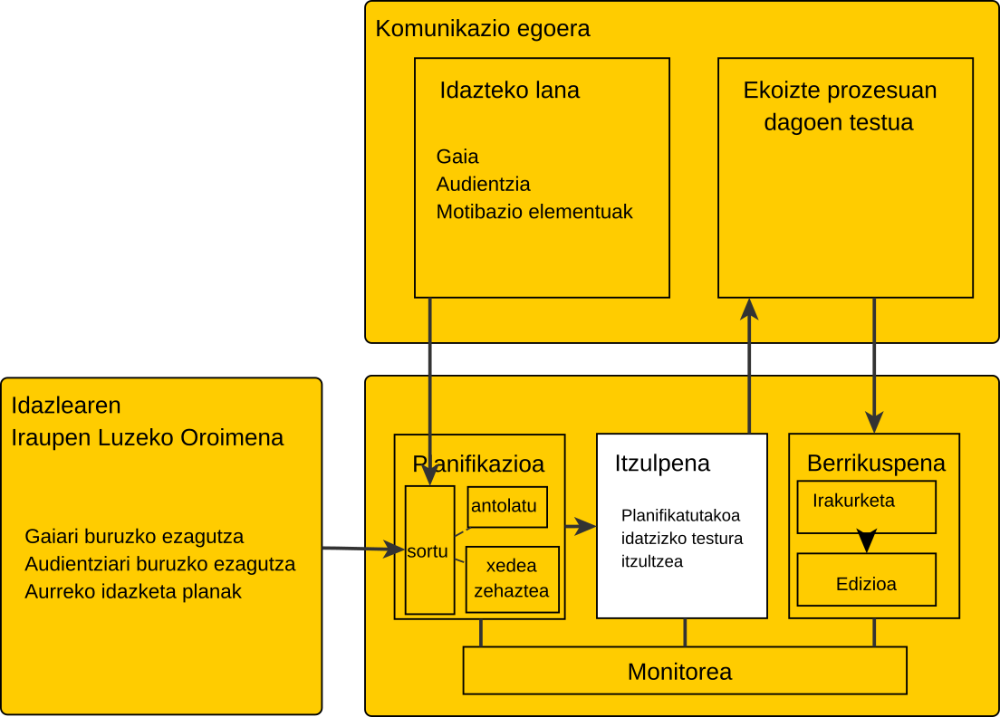
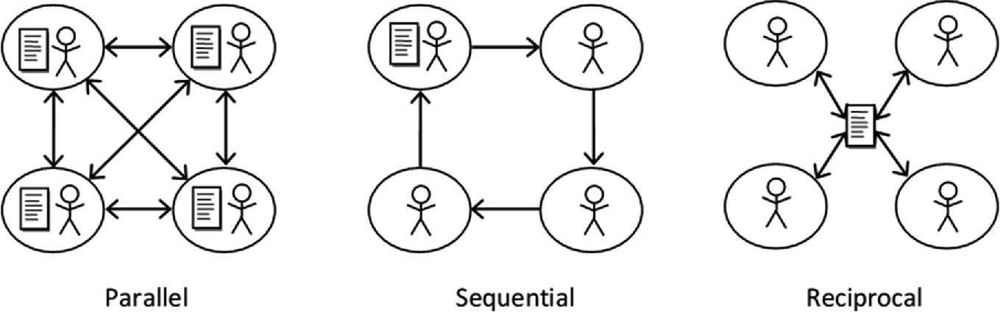
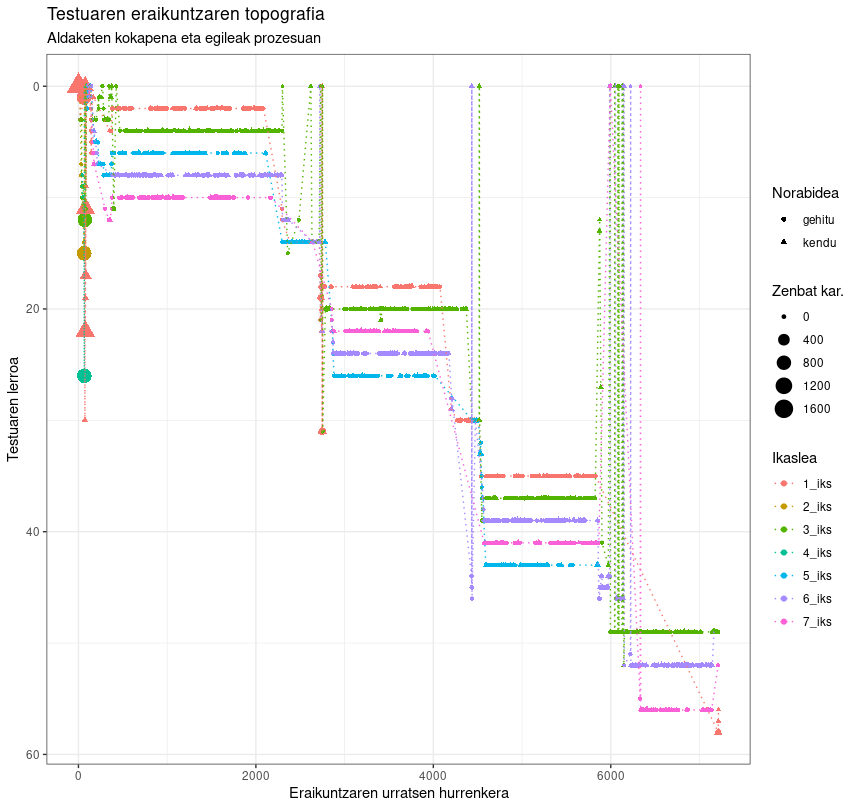
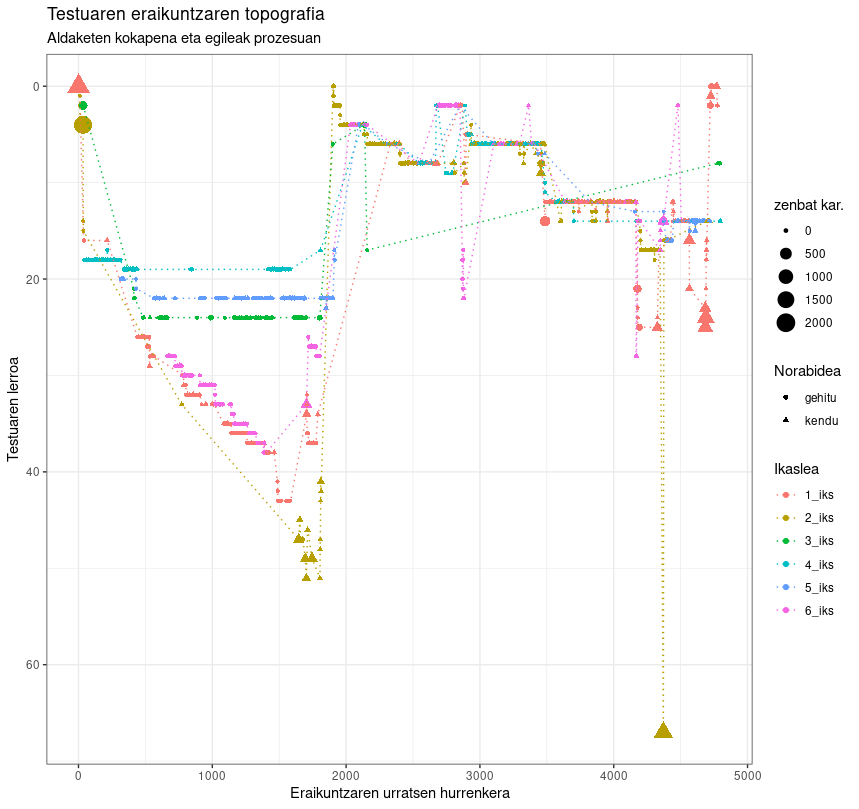
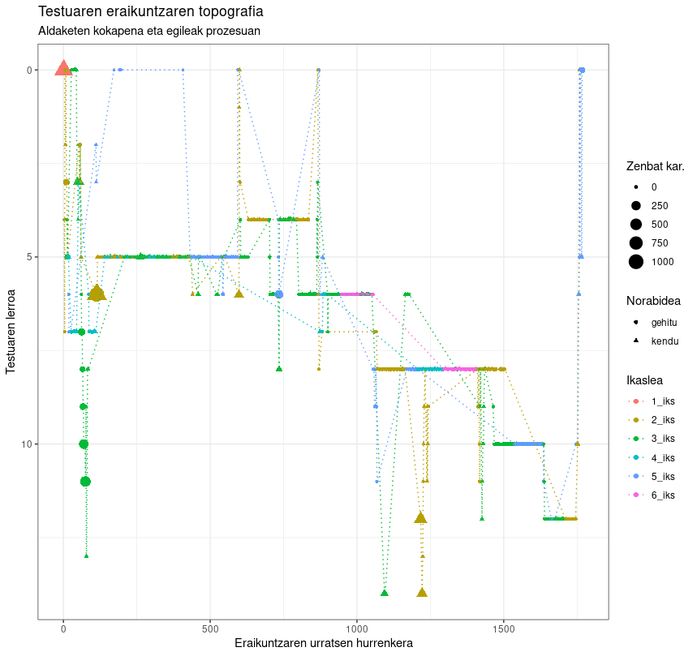

9 IKT tresna batzuk
📔
Baliabide zenbait: (Abasolo eta Eguskiza, 2023; Castelló et al., 2023; Conijn et al., 2022; Strömqvist et al., 2006; Wengelin eta Johansson, 2023) *
Gai hau aurrekoarekin lotuta dagoen arren, IKTen beste dimentsio batez ari da: Teknologiaren erabilera hizkuntza idatzia erabiltzeko, hizkuntzaren erabilera bideratzeko eta hizkuntza idatziaren erabilera aztertzeko.
9.1 Idazkeraren lehenengo pausuetan
Bizkaiko ikastetxe bateko esperientzia aberasgarri bat dakargu.
Ikastetxean blog bat zabaldu zen orain dela urte batzuk ikastetxean egiten diren jardueren-eta berri emateko.
Orain dela zenbait ikasturte HHko bigarren zikloko irakasleak hurrengo ariketa proposatu zien ikasleei:
Orri zuri batean marraztu behar duzue zuek zer duzuen gogoko, marrazki hori ordenagailuan sartuko dugu eta eskolako blogean ipiniko dugu etxekoek ikusi ahal izateko. Hori bai, marrazkia ordenagailuan sartutakoan zuok idatzi beharko duzue zer marraztu duzuen –zer duten gogoko– eta, bide batez, zuen argazki bat ere ipiniko dugu etxekoek ikusteko zelako polito zabiltzaten eskolan.
Ariketa horren bitartez:
- Umeek marrazkia egin zuten
- Umeek teklatuaz idazten saiatu ziren
- Umeak motibatu ziren (etxetik ikkusiko bai zituzten)
- Eskola - etxea zubia ere landu zen.
Umeek teklatuaz idaztearen alderdi batzuk nabarmendu ahal dira:
- Baliabide manipulagarria da
- Idazketaz duten aurrezagutzak erabil ditzakete, kaligrafiaren menpeko izan barik
- Mundu digitalean sortzaile egiten dira (lehenengoz asko)
Umeen marrazkiak, adinak eta eurek egindakoa erakusten da segidan.


Umeen idatzien izenburuak erabili dira:
- 3 urte eta 5 hileko haurrak Irudia 9.1 (a) dekribatzeko KJO9I874ºGHU idatzi zuen, adierazi zuenez pelikula bat munstruena esan nahi du horrek.
- 4 urte eta hilabeteko beste ume batek OCIEA UEX OAEA idatzi zuen Irudia 9.1 (b) azaltzeko; horrek lo egitea eta muinekakaz jolastea esan nahi du.
- 4 urte eta 5 hileko umeak LORAK BIE izenburu eman zion 9.1 (c) irudiari, lorak biltzea irakurri zuen.
- 4 urte eta 7 hileko beste haur batek idatzitako DANSA EGTA testuak argi erakusten du 9.1 (d) irudiak dantza egitea iradoki behar duela.
- 4 urte eta bederatzi urteko beste ume batek KOPAKO COKOA idatzita 9.1 (e) irudikoak, kopako jokoa adierazi nahi zuela jakinarazi zuen.
- Amaitzeko, 6 urte eta hile biko umeak ESKUPPILOTAN GOLSTEA testu gardenaren itzulpentzat eskupilotan jolastea eman zuen 9.1 (f) irudian. Azken irudi horretan eskuz idatzitako beste hainbat testu ere irakur daitezke.
Bistan denez, umeen idazteko gaitasuna nahikoa garatua dute umeek, euren kaligrafiak eta marrazkien trazuak iradoki dezakeenaren aldean.
Lanok aurren argazkiekin argitaratu ziren jatorrizko blogean, familiek etxetik ere ikus zezaten.
Hainbat tokitan sor eta ostatu daitezke blogak, ikastetxeko zerbitzarietatik hasita.
Softwareen artean zabalduena: Worpdress
9.2 Bestelako zenbait erreminta ikasleek erabiltzeko
Tresna talde bi soilik aipatuko ditugu, biak oso erabiliak izan diren arren, gutxiago erabiltzeko joera ikusi da aspaldion. Ez da baztertzekoa, baina, enpresa handiek gure erabilera ohituretan sortzen duten lilurak baztertu izana.
9.2.1 Wiki formatuko datu base estekadunak
Testu edukietan oinarritu ohi dira eta ikasleek, zein irakasleek, erruz erabiltzen dugu Wikipedia edo Txikipedia erabiltzen ditugunean. Baina, irakurle legez egiten den erabilera horri ez zaio lagun egin wikifikatutako edukien sorkuntzarekin. Nahiz eta aspaldi ez dela, asko erabili den, gure inguruko eskoletan gutxiago erabiltzeko joera antzematen da. Nazioartean hainbat lanetan azaltzen dira holako tresnen erabileraren onura (Fu, d. g.; Lau et al., 2016), aukera izatera irakasleak ebaluatu beharrekoa dela pentsarazi behar duena.
Hala eta guztiz ere, esteken bitartez aberastutako testuen sorkuntzan ere trebatzen dira gure ikasgeletako ume asko, ikastetxe barrutik era horretako erabilera bultzatuta zein bideojokoen-eta industriak bultzatuta.
Software asko dagoen arren, nagusiena Wikipedia eraikitzeko erabiltzen den MediaWiki dela esateko arazorik ez dago. Beste bide posible bat izan daiteke HTML teknologia eskulan-legez hartuta, esteka eta web orrien bitartez testu interaktiboak sortzea.
9.2.2 Ideiak maparatzeko softwarea
Hizkuntzaren erabilerarako zuzenean pentsatuak izan ez arren, ezagutzaren errepresentazio grafikorako ereduak eraikitzeko erabiltzen diren ideia-mapak, kontzeptu mapak eta abarrek hiztunari lagun diezaiokete hizkuntza jardueretan, sortzen diren kontzeptuen irudikapen horiek baliabide kognitibo asko askatzen baitizkiote.

Kontzeptuak hizkuntza artikulatuaren lerro-izaeratik askatzen ditu Novaken kontzeptu mapen planteametuak Novak et al. (1984), bere eskutik garatu zen Softwarea Cañas eta Novak (2008), IHMC CMapTools. Tresna horren erabilera urririk uzten da, baina ez da Software Librea.
Tresnok Berritzeguneetan sailkatu dira irakurri ondorengo baliabide egokitzat.
Ideia mapen kontzeptua sinpleagoa da kontzeptu maparena baino, eta, agian, horregatik zabalduagoa da horren erabilera. Besteak beste, elementu gutxiagok hartzen du parte eta ikuskera hierarkikoa gailentzen zaio kontzeptu mapen sare ikuskerari. Seguruenik Software Libre eta irekiko FreeMind1 izango da pisurik handiena duena; eurek ezarritako formatua delako gaur egunean ere aplikazio berdintsuen arteko esportazio eta inportazioa bideratzeko.
Gaur badira alderdi estetikoa landuagoa duten hainbat baliabide eta besteren bat online erabil daitekeena: Mindomo eta MindMap, besteak beste.
9.3 Idazketa prozesua aztertzeko tekleatzearen erregistroa
Oinarritzat har ezazu kontuan idazketako eredu kognitiboaren nondik norakoa Flower eta Hayes (1981)

Idazkuntza prozesua aztertzeko hainbat tresna digital garatu dira. Euretariko gehienak ordenagailuan era lokalean instalatutako programaren baten bitartez. Datu lapurrek erabiltzen duten erako programak dira, baina beste helburu baterako sortuak. Hitz gakoak zein diren jakiteko baino, tekleatze prozesu osoa berreraikitzeko.
Lehen Hezkuntzako gelan teknika hori gutxi erabili den arren Gnach et al. (2007), bide luzea du eginda teknikak lehenengo zein bigarren hizkuntzan (Allen et al., 2016; Kerz et al., 2020; Lacelle eta Lebrun, 2016; Leijten eta Van Waes, 2013; Van Waes et al., 2009).
Orain arte aipatutako tresnek gelan erabiltzeko arazo praktikoak dituzte oinarrian, erabili behar den baliabideak ordenagailuan egiten den guztiaren erregistroa gordetzen baitu. Horri erantzun nahirik online datuak batzen duen softwarea ere garatu berri da Chukharev-Hudilainen (2019) eta momentu berean Europako bazter desberdinetan hasi da erabiltzen beste software bat, horretarako propio garatu ez arren, tekleatze prozesuaren erregistroa zerbitzarian gordetzen duena (Abasolo, Eguskiza, eta Unamuno, 2020; Kerz et al., 2020).
Talde idazketa egiteko garatutako aplikazio libre batek; baina, aukera ematen du idazketa prozesuaren berreraikuntza egiteko. Aplikazio horrek, Etherpad izenekoak, aukera ematen du, gainera idazkuntza prozesuaren berri ematen duen fitxategia jaitsi eta aztertzeko. Horren azterketan oinarritua R lengoaian IDAT- Idazkuntza Aztertzeko Tresna paketearen garapena hasi da (Abasolo, Eguskiza, eta Etxebarria, 2020; Abasolo, 2023).
IDAT erabilita idazketa prozesuaren hainbat ezaugarri eskuratu daitezke:
Idazketa prozesuaren denbora luzera
Idazketa prozesuan idatzitako guztiaren kopurua
Ezabatutakoaren guztiaren kopurua
Idazkuntza abiadura
Hausnarketan igarotako denbora
Ekitaldi kopurua (hausnarketa umeen artean jarraian idatzitako tarteak), luzera eta iraupena
Egileak identifika litezke
…
Neurgarrien arteko batzuen berri ematen du IDATapp web aplikazioak (labur.eus/HDIBidatapp URLan eskuragai 25 orduz hilean).
IDATapp-k egun honakoen berri ematen du:
Prozesuan erabilitako karaktere kopuru osoa
Zenbat itsatsi den (talde handietan ez dabil ondo)
Zenbat karaktere ezabatu den
Zenbat denbora igaro da idazketan eta zenbat hausnarrean; horretarako denbora muga aukeratzen ere uzten du.
Idazketa abiaduraren berri ere ematen du zenbat karaktere idazten den minutuko kalkulatuta.
Azken testua osorik ematen du
Idazketa prozesuaren irudi bat ere ematen du, zeinetan irudikatzen den :
Aldaketa bakoitza gehiketa ala kenketa ekintza izan den,
Zenbat karaktere hartzen duen aldaketak, sarrera ordenagailua ere identifikatzen du,
Agileak identifikatzeko balio izan lezakeena
Aldaketa zein lerrotan eman den
Ordenagailu bakoitzetik zenbat aldaketa egin zaizkion dokumentuari, egileen ekarpen tamaina irudikatzeko balio du horrek.
9.4 Talde idazketari ere begiratzea
Aurrez aipatutako sistemak, bistan denez, aukera ematen du talde idatzietako datuak ere batu eta aztertzeko. Interesgarria da, horri talde idazketaren argitan aztertzea, beraz.
Kolaborazioa elkarrekin egitea bada, idazketa kolaboratiboa azaltzeko elkarrekin sortutako idatzia da. Hori egiteko hiru estrategia nagusi azaldu zituen Sharplesek (Sharples, 1993).

- Paraleloki idaztea
-
Idazleen artean, gaitasunen-edo arabera banatzen da idaztekoa. Batzuetan talde buru batek batu ditzake eta moldatu osotasun koherentea lortzeko
- Sekuentzialki idaztea
-
Idazketa lerroa/biribila dela esan liteke. Bat hasten da idazten eta amaitu bako testua bigarren bati pasatzen dio, horrek osatzen eta egokitzen segi dezan, hurrengo hirugarren bati pasatzeko. Prozesu hau ziklikoki edo linealki gara daiteke
- Elkarrekiko koordinazioan
-
Honelako jardunetan idazle guztiek idazten dute testu bakar batean elkarren lanak eta ekarpenak kontuan izanda, hartara bakoitzak bera ari den inguruan egokitzapenak egin ditzake
Egiletzarako estrategiak Posnerrek eta Baekerrek -(Posner eta Baecker, 1992) honela sailkatu zuten:
- Idazle bakarreko estrategia
-
Taldeko bakarrak idazten du eta besteek lagundu
- Idazle banatuen estrategia
-
Unitateetan banatzen da egin beharrekoa eta egile bakoitzak dagokion zatia idatzi
- Eskribaren estrategia
-
Taldeak elkarrekin egiten du eta bakarrak idatzi
- Taldekako idazketarako estrategia
-
Taldekide guztiek berbarik berba erabaki idatzia
9.4.1 IDAT taldeko idatziekin
Aurrez aipatutako R-rako pakete hori erabil daiteke taldeko idatziak aztertzeko ere Abasolo eta Eguskiza (2023); horixe erabilita irakasleak aukera izan dezake taldekideen jarduna aztertzeko azken testuaren azterketaz gain.



Ariketa honetan espero da zuk azken testuaren ezaugarriez gain, ekoizpen prozesuaz hausnarketa egiteko. Horretarako:
Idatzi Etherpad instantzia batean2 testua:
Berbazko diskurtso irakurria idatzi behar duzu, lanean hasi berria zaren ikastetxeak IKTen erabilera beste era batera bideratzearen onurez konbentzitzeko.Nork: Irakasle hasi berria
Norentzat: Irakasle zahar eta ohituraz erratuak
Zertarako: Claustroan irakurtzeko
Helburua: Aldaketaren beharraz konbentzitzeaJaitsi testua formatu irakurgarrian eta
etherpadformatuan, horretarako eskaintzen den esportazio - inportazio aukera erabilita (gezi bi elkarren gainean)Aztertu IDATapp erabilita eta alderatu beste taldekide batzuen idazketa prozesuaz eta ondorioak idatzi.
Aztertu irakasleak pasatuko dizun zuen taldeko lana eta ondorioak idatzi, norbanakoaren idazkeraz eta talde lanaren eraikuntzaz.